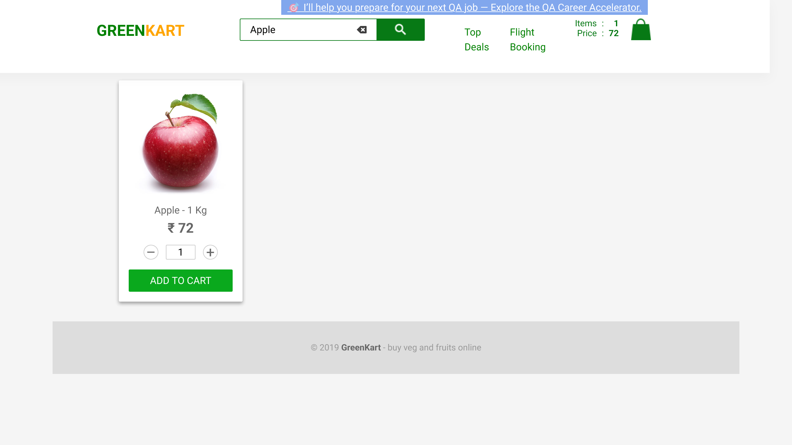

GreenKart Full Project Test Report
Playwright results for all test files in the project across the configured browser projects.
Results by browser
| Browser | Passed | Failed | Notes |
|---|---|---|---|
| Chromium | 31 / 39 | 8 | Failures were assertion/behavior mismatches; screenshots are included below. |
| Firefox | 0 / 39 | 39 | Browser launch was blocked because msvcp140_1.dll is missing. These are environment failures, not application test results. |
| WebKit | 28 / 39 | 11 | Assertion/behavior mismatches; screenshots are included below. |
Test coverage included
39 test cases were discovered: 30 GreenKart home-page cases, 6 existing GreenKart shopping/Top Deals cases, 2 Playwright example cases, and 1 seed placeholder. Each was run against Chromium, Firefox, and WebKit (117 runs total).
Key findings
-
39 runs
Firefox test execution blocked by the local environment
All 39 Firefox cases failed to launch because the host is missing
msvcp140_1.dll. Install/repair the Microsoft Visual C++ runtime before using Firefox results to assess the app. -
Repeated failures
Quantity validation and cart behavior
Zero, negative, and fractional quantity cases failed; invalid quantities could remain in inputs or be added to the cart.
-
Chromium / WebKit
Search and responsive behavior
Queries with surrounding spaces did not match; the mobile-width search control was unavailable to the test. These failures appeared in Chromium and WebKit.
-
See details
Other browser-specific assertions
Repeated-add cart totals, keyboard focus, checkout-summary text, promo feedback, and reload recovery also had failures. See the detailed Playwright report for each assertion and trace/context.
Failure screenshots (19)
Expand a failed run to view its screenshot. Firefox screenshots were unavailable because the browser did not launch.
-
ChromiumFailed
5.2 — Responsive layout at desktop, tablet, and mobile widths
View screenshot

-
ChromiumFailed
4.4 — Accumulates repeated additions of the same product
View screenshot

- Failed
- Failed
- Failed
- Failed
- Failed
-
ChromiumFailed
2.5 — Matches a product when query has surrounding whitespace
View screenshot

-
WebKitFailed
Adds two apples and verifies the checkout summary without placing an order
View screenshot

- Failed
- Failed
- Failed
- Failed
- Failed
- Failed
- Failed
- Failed
- Failed
- Failed
Detailed test report
Detailed per-test assertions and browser traces are available in the local Playwright report generated by npx playwright show-report. The generated report is excluded from source control; this summary and its curated screenshots are portable with the repository.